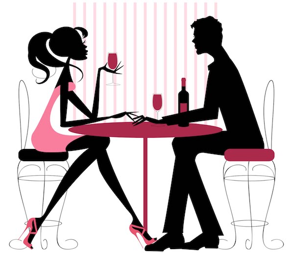

So, here we are, gents. Supposedly being "all that and a bag of chips", all grown up, basically young men, craved by all the hot and single ladies in the dating after 30 game.
Do you even remember what it was like fancying a girl in elementary school? You would get all shy, had to prepare your little speech for a week before having the courage to go and talk to her. When you’d finally be next to each other, you’d feel a rush in your heart and your cheeks would turn red… Those were the days!
As we got older and high school knocked on the door, we stepped our game up, actually being a little bit more confident asking girls out, even offering a bouquet of flowers. Still I remember a few times I almost wet my pants before talking to some, because I really liked them and there was no way I could hide my silly emotions.
Unfortunetly high school flew pretty fast by, and dragged along college and the rest of our 20s. I always looked ahead and I would imagine that after 30, the dating game would drastically change and in order to get a date, you would have to be some kind of a super man, dressed like a million bucks and have connections at all the luxury restaurants in town.
In some cases, that scenario right there could fulfill the expectation, but in fact, for the average Joe, reality strikes a little bit different. Sure, who doesn’t want to go out on a dinner date, dressed nicely, wearing a good perfume, making her feel like she’s on top of the world? But, after a few dates like that, you feel like you’re getting tired of all the fancy things and want to get your (and her) feet back on the ground, wear a pair of dusty jeans with a t-shirt and just walk under the moonlight, sharing a beer and telling funny, embarassing stories.
Of all the dates I can remember, the most memorable ones where the times we both felt natural, relaxed, with no extra pressure created by a fancy location or a dress code. One time, as a first date, I just picked her up from a shopping mall and went donuts eating in the park, while enjoying a good conversation and filling our hearts with pure joy.
The reality of this dating game after 30 can be a bit distorted by some teenager’s mind, but in the end, all you need to do is relax, enjoy a couple of ice creams and get to really know the person next to you in the most purest and honest way. You’ll have plenty of time for fancy dating if things will go well between the 2 of you.